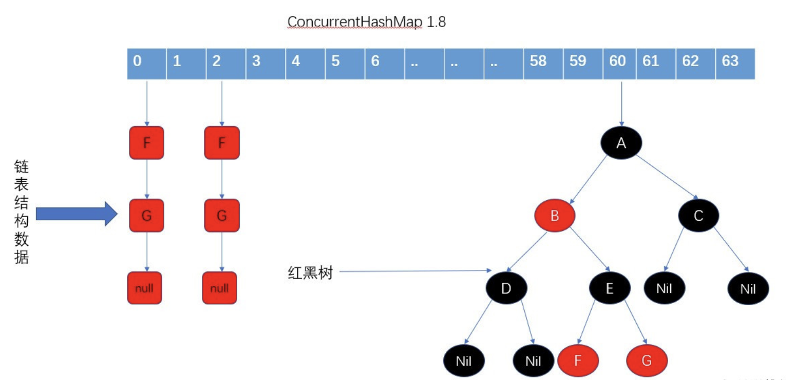

[TOC]
ConcurrentHashMap(class)
public class ConcurrentHashMap<K,V> extends AbstractMap<K,V>
implements ConcurrentMap<K,V>, Serializable {
底层：数组+链表/红黑树，CAS + synchronized控制并发(线程安全的HashMap)

每个桶可能是链表结构或者红黑树结构，锁针对桶的头节点加，锁粒度小
/* ---------------- Fields -------------- */
/**
* 懒加载方式初始化 Node 数组
* The array of bins. Lazily initialized upon first insertion.
* Size is always a power of two. Accessed directly by iterators.
*/
transient volatile Node<K,V>[] table;
/**
* 只有扩容的时候才不是null
* The next table to use; non-null only while resizing.
*/
private transient volatile Node<K,V>[] nextTable;
/**
* Base counter value, used mainly when there is no contention,
* but also as a fallback during table initialization
* races. Updated via CAS.
*/
private transient volatile long baseCount;
/**
* Table initialization and resizing control. When negative, the
* table is being initialized or resized: -1 for initialization,
* else -(1 + the number of active resizing threads). Otherwise,
* when table is null, holds the initial table size to use upon
* creation, or 0 for default. After initialization, holds the
* next element count value upon which to resize the table.
*/
private transient volatile int sizeCtl;
/**
* The next table index (plus one) to split while resizing.
*/
private transient volatile int transferIndex;
/**
* Spinlock (locked via CAS) used when resizing and/or creating CounterCells.
*/
private transient volatile int cellsBusy;
/**
* Table of counter cells. When non-null, size is a power of 2.
*/
private transient volatile CounterCell[] counterCells;
// views
private transient KeySetView<K,V> keySet;
private transient ValuesView<K,V> values;
private transient EntrySetView<K,V> entrySet;
static class Node<K,V> implements Map.Entry<K,V> {
final int hash;
final K key;
volatile V val;
volatile Node<K,V> next;
put方法
定位Node数组位置使用CAS操作定位，真正进行插入操作的时候会使用synchronized关键字加锁头部
/** Implementation for put and putIfAbsent */
final V putVal(K key, V value, boolean onlyIfAbsent) {
// key, value 都不能为null
if (key == null || value == null) throw new NullPointerException();
int hash = spread(key.hashCode());
int binCount = 0;
for (Node<K,V>[] tab = table;;) {
Node<K,V> f; int n, i, fh;
// 如果Node数组是空，则进行初始化；初始化是CAS操作
if (tab == null || (n = tab.length) == 0)
tab = initTable();
else if ((f = tabAt(tab, i = (n - 1) & hash)) == null) {
// 数组位置节点为null，则CAS方式进行添加Node到数组位置
if (casTabAt(tab, i, null,
new Node<K,V>(hash, key, value, null)))
break; // no lock when adding to empty bin
}
else if ((fh = f.hash) == MOVED)
// 如果数组位置节点正在迁移，则帮助迁移
tab = helpTransfer(tab, f);
else {
// 没有迁移，且数组位置不是空，则进行聊表或者红黑树的插入操作，可能涉及到链表转红黑树
V oldVal = null;
// 直接用 synchronized 锁住 链表或者红黑树的头部
synchronized (f) {
if (tabAt(tab, i) == f) {
// 链表遍历判断，替换老值，或者进行尾插
if (fh >= 0) {
binCount = 1;
for (Node<K,V> e = f;; ++binCount) {
K ek;
if (e.hash == hash &&
((ek = e.key) == key ||
(ek != null && key.equals(ek)))) {
oldVal = e.val;
if (!onlyIfAbsent)
e.val = value;
break;
}
Node<K,V> pred = e;
if ((e = e.next) == null) {
pred.next = new Node<K,V>(hash, key,
value, null);
break;
}
}
}
// 红黑树替换老值，或者进行红黑树插入
else if (f instanceof TreeBin) {
Node<K,V> p;
binCount = 2;
if ((p = ((TreeBin<K,V>)f).putTreeVal(hash, key,
value)) != null) {
oldVal = p.val;
if (!onlyIfAbsent)
p.val = value;
}
}
}
}
if (binCount != 0) {
if (binCount >= TREEIFY_THRESHOLD)
treeifyBin(tab, i);
if (oldVal != null)
return oldVal;
break;
}
}
}
addCount(1L, binCount);
return null;
}
put完成后addCount(1L, binCount);会进行数量统计和扩容判断操作
/**
* Adds to count, and if table is too small and not already
* resizing, initiates transfer. If already resizing, helps
* perform transfer if work is available. Rechecks occupancy
* after a transfer to see if another resize is already needed
* because resizings are lagging additions.
*
* @param x the count to add
* @param check if <0, don't check resize, if <= 1 only check if uncontended
*/
private final void addCount(long x, int check) {
CounterCell[] as; long b, s;
if ((as = counterCells) != null ||
!U.compareAndSwapLong(this, BASECOUNT, b = baseCount, s = b + x)) {
CounterCell a; long v; int m;
boolean uncontended = true;
if (as == null || (m = as.length - 1) < 0 ||
(a = as[ThreadLocalRandom.getProbe() & m]) == null ||
!(uncontended =
U.compareAndSwapLong(a, CELLVALUE, v = a.value, v + x))) {
fullAddCount(x, uncontended);
return;
}
if (check <= 1)
return;
s = sumCount();
}
if (check >= 0) {
Node<K,V>[] tab, nt; int n, sc;
while (s >= (long)(sc = sizeCtl) && (tab = table) != null &&
(n = tab.length) < MAXIMUM_CAPACITY) {
int rs = resizeStamp(n);
if (sc < 0) {
if ((sc >>> RESIZE_STAMP_SHIFT) != rs || sc == rs + 1 ||
sc == rs + MAX_RESIZERS || (nt = nextTable) == null ||
transferIndex <= 0)
break;
if (U.compareAndSwapInt(this, SIZECTL, sc, sc + 1))
transfer(tab, nt);
}
else if (U.compareAndSwapInt(this, SIZECTL, sc,
(rs << RESIZE_STAMP_SHIFT) + 2))
transfer(tab, null);
s = sumCount();
}
}
}
get方法
get方法使用CAS操作，没有加锁
/**
* Returns the value to which the specified key is mapped,
* or {@code null} if this map contains no mapping for the key.
*
* <p>More formally, if this map contains a mapping from a key
* {@code k} to a value {@code v} such that {@code key.equals(k)},
* then this method returns {@code v}; otherwise it returns
* {@code null}. (There can be at most one such mapping.)
*
* @throws NullPointerException if the specified key is null
*/
public V get(Object key) {
Node<K,V>[] tab; Node<K,V> e, p; int n, eh; K ek;
// 获取hash值，然后CAS定位到Node数组中到位置(tabAt方法)
int h = spread(key.hashCode());
if ((tab = table) != null && (n = tab.length) > 0 &&
(e = tabAt(tab, (n - 1) & h)) != null) {
// 就是头节点那么直接返回即可
if ((eh = e.hash) == h) {
if ((ek = e.key) == key || (ek != null && key.equals(ek)))
return e.val;
}
else if (eh < 0)
// 红黑树查找
return (p = e.find(h, key)) != null ? p.val : null;
while ((e = e.next) != null) {
// 遍历链表然后判断返回
if (e.hash == h &&
((ek = e.key) == key || (ek != null && key.equals(ek))))
return e.val;
}
}
return null;
}
获取size & CounterCell数组
/**
* Returns the number of mappings. This method should be used
* instead of {@link #size} because a ConcurrentHashMap may
* contain more mappings than can be represented as an int. The
* value returned is an estimate; the actual count may differ if
* there are concurrent insertions or removals.
*
* @return the number of mappings
* @since 1.8
*/
public long mappingCount() {
long n = sumCount();
return (n < 0L) ? 0L : n; // ignore transient negative values
}
final long sumCount() {
CounterCell[] as = counterCells; CounterCell a;
long sum = baseCount;
if (as != null) {
for (int i = 0; i < as.length; ++i) {
if ((a = as[i]) != null)
sum += a.value;
}
}
return sum;
}
- 在统计元素个数时，就是baseCount加上所有CountCeller中的value指，所得的和就是所有的元素个数。
在统计ConcurentHashMap时，不能直接对ConcurrentHashMap对象进行加锁然后再去统计，因为这样会影响ConcurrentHashMap的put等操作的效率
在JDK8的实现中使用了CounterCell+baseCount来辅助进行统计，baseCount是ConcurrentHashMap中的一个属性，某个线程在调用ConcurrentHashMap对象的put操作时，会先通过CAS去修改baseCount的值，如果CAS修改成功，就计数成功；如果CAS修改失败，则会从CounterCell数组中随机选出一个CounterCell对象，然后利用CAS去修改CounterCell对象中的值，因为存在CounterCell数组，所以，当某个线程想要计数时，先尝试通过CAS去修改baseCount的值，如果没有修改成功，则从CounterCell数组中随机取出来一个CounterCell对象进行CAS计数，这样在计数时提高了效率。
对比Java7分段锁的优劣
Java8的锁粒度更小，能支持更高的并发
只需要锁住这个链表/红黑树的head节点，并不会影响其他的table元素的读写，影响更小
初始容量的设置（tableSizeFor方法返回一个大于输入参数且最小的为2的n次幂的数）
public ConcurrentHashMap(int initialCapacity) {
if (initialCapacity < 0)
throw new IllegalArgumentException();
int cap = ((initialCapacity >= (MAXIMUM_CAPACITY >>> 1)) ?
MAXIMUM_CAPACITY :
tableSizeFor(initialCapacity + (initialCapacity >>> 1) + 1));
this.sizeCtl = cap;
}
为什么tableSizeFor()的参数为initialCapacity + (initialCapacity >>> 1) + 1而不是直接传入initialCapacity呢?
在ConcurrentHashMap有一个参数LOAD_FACTOR，默认值为0.75f。假设当前map容量为16，当其中的元素个数达到16*0.75f，也就是12个的时候，map为了最大化利用hash的作用，会进行扩容，也就是map中的元素个数一般不会达到容量的大小。
使用参数initialCapacity + (initialCapacity >>> 1) + 1来设置容量，不至于在初始化时就超过上述"12"这个元素，并且能提供一些多余的空间，不至于在插入元素后马上就进行比较耗时的扩容操作。
为什么扩容两倍？
table的size为n的时候，通过key.hash & (n-1)确定在table中的位置i，当table扩容后（2倍），新的索引要么在原来的位置i,要么是i+n
所以扩容处理，要么原来key保持不变，要么做迁移，而table中原来的各个节点是互相不影响的
因为旧table的各个桶中的节点迁移不会互相影响，所以就可以用"分治"的方式，将整个table数组划分为很多部分，每一部分包含一定区间的桶，每个数据迁移线程处理各自区间中的节点，对多线程同时进行数据迁移非常有利扩容的时机？
当table容量不足的时候，即table的元素数量达到容量阈值sizeCtl，需要对table进行扩容
/**
* Adds to count, and if table is too small and not already
* resizing, initiates transfer. If already resizing, helps
* perform transfer if work is available. Rechecks occupancy
* after a transfer to see if another resize is already needed
* because resizings are lagging additions.
*
* @param x the count to add
* @param check if <0, don't check resize, if <= 1 only check if uncontended
*/
private final void addCount(long x, int check) {
CounterCell[] as; long b, s;
if ((as = counterCells) != null ||
!U.compareAndSwapLong(this, BASECOUNT, b = baseCount, s = b + x)) {
CounterCell a; long v; int m;
boolean uncontended = true;
if (as == null || (m = as.length - 1) < 0 ||
(a = as[ThreadLocalRandom.getProbe() & m]) == null ||
!(uncontended =
U.compareAndSwapLong(a, CELLVALUE, v = a.value, v + x))) {
fullAddCount(x, uncontended);
return;
}
if (check <= 1)
return;
s = sumCount();
}
if (check >= 0) {
Node<K,V>[] tab, nt; int n, sc;
while (s >= (long)(sc = sizeCtl) && (tab = table) != null &&
(n = tab.length) < MAXIMUM_CAPACITY) {
int rs = resizeStamp(n);
if (sc < 0) { // sc < 0 表明此时有别的线程正在进行扩容
if ((sc >>> RESIZE_STAMP_SHIFT) != rs || sc == rs + 1 ||
sc == rs + MAX_RESIZERS || (nt = nextTable) == null ||
transferIndex <= 0)
break;
// 尝试参与此次扩容，把正在执行transfer任务的线程数加1
if (U.compareAndSwapInt(this, SIZECTL, sc, sc + 1))
transfer(tab, nt);
}
// 试着让自己成为第一个执行transfer任务的线程
else if (U.compareAndSwapInt(this, SIZECTL, sc,
(rs << RESIZE_STAMP_SHIFT) + 2))
transfer(tab, null);
// 重新计数，判断是否需要开启下一轮扩容
s = sumCount();
}
}
}
/**
* Replaces all linked nodes in bin at given index unless table is
* too small, in which case resizes instead.
*/
private final void treeifyBin(Node<K,V>[] tab, int index) {
Node<K,V> b; int n, sc;
if (tab != null) {
// 1: table的容量 < MIN_TREEIFY_CAPACITY(64)时，直接进行table扩容，不进行红黑树转换
if ((n = tab.length) < MIN_TREEIFY_CAPACITY)
tryPresize(n << 1);
// 2: table的容量 ≥ MIN_TREEIFY_CAPACITY(64)时，进行链表 -> 红黑树的转换
else if ((b = tabAt(tab, index)) != null && b.hash >= 0) {
synchronized (b) {
if (tabAt(tab, index) == b) {
TreeNode<K,V> hd = null, tl = null;
for (Node<K,V> e = b; e != null; e = e.next) {
TreeNode<K,V> p =
new TreeNode<K,V>(e.hash, e.key, e.val,
null, null);
if ((p.prev = tl) == null)
hd = p;
else
tl.next = p;
tl = p;
}
setTabAt(tab, index, new TreeBin<K,V>(hd));
}
}
}
}
}
链表 转化为 红黑树这一步并不一定会进行的，当table长度较小时，ConcurrentHashMap先考虑扩容，而非立即转化为红黑树
private final void tryPresize(int size) {
int c = (size >= (MAXIMUM_CAPACITY >>> 1)) ? MAXIMUM_CAPACITY :
tableSizeFor(size + (size >>> 1) + 1);
int sc;
while ((sc = sizeCtl) >= 0) {
Node<K,V>[] tab = table; int n;
if (tab == null || (n = tab.length) == 0) {
n = (sc > c) ? sc : c;
if (U.compareAndSwapInt(this, SIZECTL, sc, -1)) {
try {
if (table == tab) {
@SuppressWarnings("unchecked")
Node<K,V>[] nt = (Node<K,V>[])new Node<?,?>[n];
table = nt;
sc = n - (n >>> 2);
}
} finally {
sizeCtl = sc;
}
}
}
// c <= sc说明已经被扩容过了；n >= MAXIMUM_CAPACITY说明table数组已达到最大容量</span>
else if (c <= sc || n >= MAXIMUM_CAPACITY)
break;
else if (tab == table) {
// 根据n并生成一个随机标志表示扩容操作
int rs = resizeStamp(n);
if (sc < 0) {
Node<K,V>[] nt;
if ((sc >>> RESIZE_STAMP_SHIFT) != rs || sc == rs + 1 ||
sc == rs + MAX_RESIZERS || (nt = nextTable) == null ||
transferIndex <= 0)
break;
// 协助数据迁移，把正在执行transfer任务的线程数加1
if (U.compareAndSwapInt(this, SIZECTL, sc, sc + 1))
transfer(tab, nt);
}
// 当前线程自身成为第一个执行transfer的线程
else if (U.compareAndSwapInt(this, SIZECTL, sc,
(rs << RESIZE_STAMP_SHIFT) + 2))
transfer(tab, null);
}
}
}
transfer 迁移数据原理
nextTable：扩容期间，将原table数组中的元素迁移到nextTable；在扩容的过程中，如果有其它线程在put，那么这个put线程会帮助去进行元素的转移
多线程之间，以volatile的方式读取sizeCtl属性，来判断ConcurrentHashMap当前所处的状态。通过cas设置sizeCtl属性，告知其他线程ConcurrentHashMap的状态变更。
不同状态，sizeCtl所代表的含义也有所不同
/**
* Table initialization and resizing control. When negative, the
* table is being initialized or resized: -1 for initialization,
* else -(1 + the number of active resizing threads). Otherwise,
* when table is null, holds the initial table size to use upon
* creation, or 0 for default. After initialization, holds the
* next element count value upon which to resize the table.
*/
private transient volatile int sizeCtl;
未初始化：
- sizeCtl=0：表示没有指定初始容量。
- sizeCtl>0：表示初始容量。
初始化中：
- sizeCtl=-1,标记作用，告知其他线程，正在初始化
正常状态：
- sizeCtl=0.75n,扩容阈值
扩容中:
- sizeCtl < 0: 表示有其它线程正在执行扩容
- sizeCtl = (resizeStamp(n) << RESIZE_STAMP_SHIFT) + 2 :表示此时只有一个线程在执行扩容
transferIndex：扩容索引，表示已经分配给扩容线程的table数组索引位置。主要用来协调多个线程，并发安全地获取迁移任务（hash桶）
如果遍历到的节点是forward节点，就向后继续遍历，再加上给节点上锁的机制，就完成了多线程的控制。多线程遍历节点，处理了一个节点，就把对应点的值set为forward，另一个线程看到forward，就向后遍历。这样交叉就完成了复制工作。而且还很好的解决了线程安全的问题。

/**
* Moves and/or copies the nodes in each bin to new table. See
* above for explanation.
*/
private final void transfer(Node<K,V>[] tab, Node<K,V>[] nextTab) {
int n = tab.length, stride;
// stride可理解为”步长“,即数据迁移时，每个线程要负责旧table中多少个桶
if ((stride = (NCPU > 1) ? (n >>> 3) / NCPU : n) < MIN_TRANSFER_STRIDE)
stride = MIN_TRANSFER_STRIDE; // subdivide range
if (nextTab == null) { // initiating
try {
// 创建新的table数组
@SuppressWarnings("unchecked")
Node<K,V>[] nt = (Node<K,V>[])new Node<?,?>[n << 1];
nextTab = nt;
} catch (Throwable ex) { // try to cope with OOME
sizeCtl = Integer.MAX_VALUE;
return;
}
nextTable = nextTab;
transferIndex = n;
}
int nextn = nextTab.length;
// ForwardingNode节点：当旧table的某个桶中的所有节点迁移完成后，用该节点占据这个桶
ForwardingNode<K,V> fwd = new ForwardingNode<K,V>(nextTab);
// 标示一个桶是否迁移完成，如果迁移完成，则可以进行下一个桶的迁移
boolean advance = true;
boolean finishing = false; // to ensure sweep before committing nextTab
for (int i = 0, bound = 0;;) {
Node<K,V> f; int fh;
while (advance) {
int nextIndex, nextBound;
if (--i >= bound || finishing)
advance = false;
else if ((nextIndex = transferIndex) <= 0) {
i = -1;
advance = false;
}
else if (U.compareAndSwapInt
(this, TRANSFERINDEX, nextIndex,
nextBound = (nextIndex > stride ?
nextIndex - stride : 0))) {
bound = nextBound;
i = nextIndex - 1;
advance = false;
}
}
if (i < 0 || i >= n || i + n >= nextn) {
int sc;
if (finishing) { // 所有桶迁移完成
nextTable = null;
table = nextTab;
sizeCtl = (n << 1) - (n >>> 1);
return;
}
// 扩容线程减少1，并判断是否是最后一个迁移线程，并做检查
if (U.compareAndSwapInt(this, SIZECTL, sc = sizeCtl, sc - 1)) {
if ((sc - 2) != resizeStamp(n) << RESIZE_STAMP_SHIFT)
return;
finishing = advance = true;
i = n; // recheck before commit
}
}
else if ((f = tabAt(tab, i)) == null)
advance = casTabAt(tab, i, null, fwd);
else if ((fh = f.hash) == MOVED)
advance = true; // already processed
else {
synchronized (f) {
if (tabAt(tab, i) == f) {
Node<K,V> ln, hn;
if (fh >= 0) {
int runBit = fh & n;
Node<K,V> lastRun = f;
for (Node<K,V> p = f.next; p != null; p = p.next) {
int b = p.hash & n;
if (b != runBit) {
runBit = b;
lastRun = p;
}
}
if (runBit == 0) {
ln = lastRun;
hn = null;
}
else {
hn = lastRun;
ln = null;
}
for (Node<K,V> p = f; p != lastRun; p = p.next) {
int ph = p.hash; K pk = p.key; V pv = p.val;
if ((ph & n) == 0)
ln = new Node<K,V>(ph, pk, pv, ln);
else
hn = new Node<K,V>(ph, pk, pv, hn);
}
setTabAt(nextTab, i, ln);
setTabAt(nextTab, i + n, hn);
setTabAt(tab, i, fwd);
advance = true;
}
else if (f instanceof TreeBin) {
TreeBin<K,V> t = (TreeBin<K,V>)f;
TreeNode<K,V> lo = null, loTail = null;
TreeNode<K,V> hi = null, hiTail = null;
int lc = 0, hc = 0;
for (Node<K,V> e = t.first; e != null; e = e.next) {
int h = e.hash;
TreeNode<K,V> p = new TreeNode<K,V>
(h, e.key, e.val, null, null);
if ((h & n) == 0) {
if ((p.prev = loTail) == null)
lo = p;
else
loTail.next = p;
loTail = p;
++lc;
}
else {
if ((p.prev = hiTail) == null)
hi = p;
else
hiTail.next = p;
hiTail = p;
++hc;
}
}
ln = (lc <= UNTREEIFY_THRESHOLD) ? untreeify(lo) :
(hc != 0) ? new TreeBin<K,V>(lo) : t;
hn = (hc <= UNTREEIFY_THRESHOLD) ? untreeify(hi) :
(lc != 0) ? new TreeBin<K,V>(hi) : t;
setTabAt(nextTab, i, ln);
setTabAt(nextTab, i + n, hn);
setTabAt(tab, i, fwd);
advance = true;
}
}
}
}
}
}